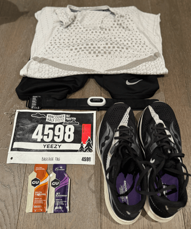
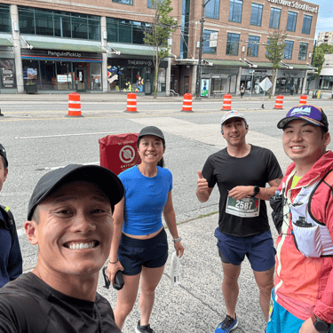
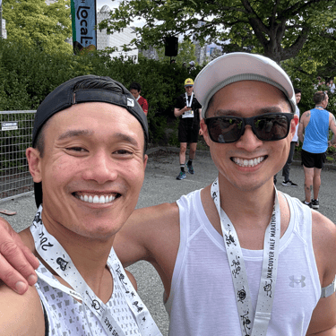
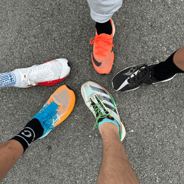
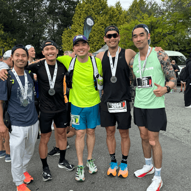

I hadn't trained specifically for the half — I'd just run the BMO Marathon in early May and was ramping toward Ironman Penticton — but I'd kept up Tuesday speed sessions with the Fraser Street Run Club. Goal: beat my personal best of 1:18:32, with a stretch target of breaking 1:17, though that felt unlikely without speed-specific training.
Half marathon results to date

- Scotiabank Half Marathon 2019 — 1:18:32, 30/1,713 OA
- Vancouver Half Marathon 2024 — 1:17:48, 23/3,799 OA
Pacing
My legs were heavy from the start — a ride to the peak of Seymour plus a hard half-marathon session three days before hadn't fully cleared. In hindsight I should've done that workout four or five days out and given myself a real taper.

Lesson: rest and recovery matter as much as structured training. I'd tapered ten to eleven days for the marathon; the half deserved at least four or five.
The course's rolling terrain made pacing tricky — five downhill kilometers out, then an uphill retrace back toward UBC. I started conservatively to save my legs for the climb, cresting the hill essentially alone, just under my 3:41/km target through 10K. I took a gel at the 12K aid station to save my last one for 16K, and focused on keeping cadence above 190 for the first time in a race — noticeably more efficient than my usual mid-180s.
Lesson: carry one more gel than you think you'll need, and don't rely on course availability. Lock in a 190+ cadence.

Stats: average cadence 192, average HR 160, ~1,184 calories, ~1,296ml estimated sweat loss.
Nutrition and weather
Same carb-loading routine as always — homemade pasta and turkey sauce for two dinners prior, concentrated Gatorade with pink Himalayan salt the day before given the forecast cloud cover. Oatmeal with banana, blueberries, and maple syrup two hours out, one caffeinated gel forty-five minutes before the start. Weather was ideal — 12°C and dry at the gun, warming to about 15°C by the finish.

Result
I stuck to my plan even as other runners pulled away early, and I'm building real confidence that my pacing and nutrition are dialed in. I should've given the prior hard session more recovery time, but I'm glad I tested where I could push and where I needed to hold back — and it's genuinely satisfying to feel like I'm getting faster with age.
Lesson: believe in the process and stick to your own plan.

What's next: seven weeks into a new medication for my Ankylosing Spondylitis and it's still astonishing to live pain-free. Ironman Penticton (August, goal sub-10:45) and the Portland Marathon (October, goal sub-2:40) are next up.
---